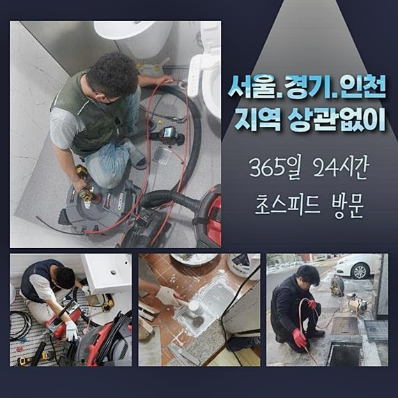
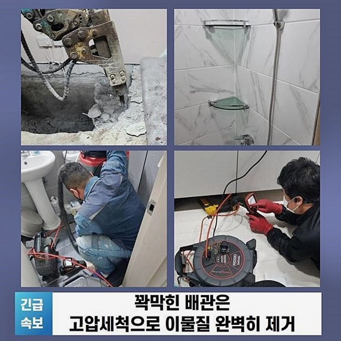
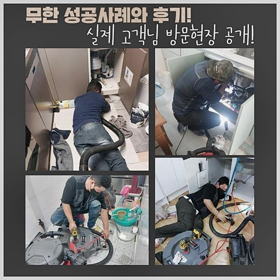
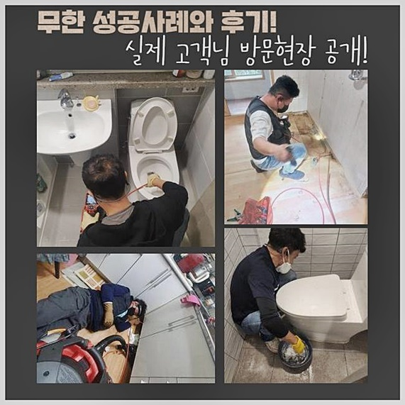
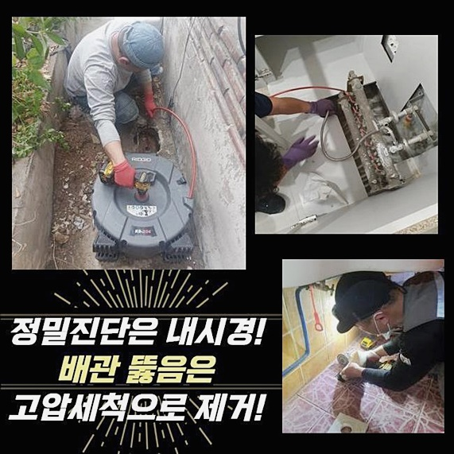
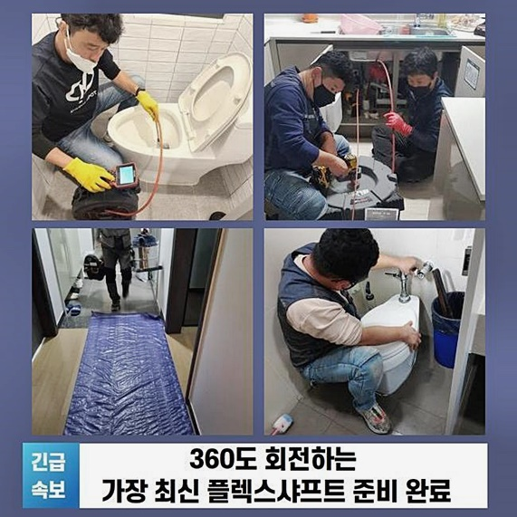
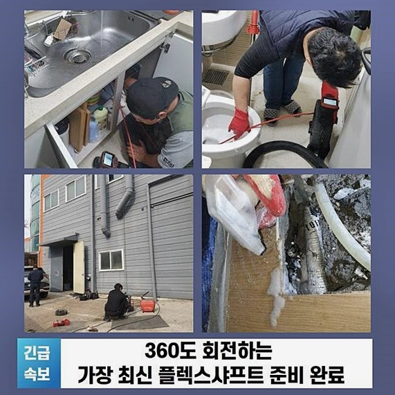

🏠 중구 초동오수관역류 충무로 하수구뚫어주는곳
용인시 처인구 누수수리 전문 시공 후기

📋 작업 개요
- 위치: 용인시 처인구, 수원시 영통구, 화성시 동탄
- 서비스 유형: 누수수리, 고압세척, 내시경점검
- 작업 일시:
- 업체명: 하수구수사대 (010-5615-2118)
🔍 문제 상황
중구 초동오수관역류 충무로 하수구뚫어주는곳
역류증상이 나타나게된다면 다양한 방면에서 제약이 생겨나게되죠
가정에서와 같이 외부도 동일합니다
역류들이 불거졌을때 단순하게 하수만 넘치는것이 아니고 곳곳에 쌓여진 오염물들과 냄새가 생겨나기에 빠르게 헤쳐나가야합니다
앞서 방문드린 곳 또한 하수도가 역류하게되는 바람에 저희들에게 문의하셨는데요
방문 뒤 증상을 들여다보았죠
지하쪽의 하수도에서 역류들이 시작된 장소로 냄새들도 심각했습니다
이대로 안쪽의 상황을 못보므로 진단을 해줘야했죠
주변에 존재하는 잔여물질은 걷어낸 뒤 펌프장치를 써서 물들을 제거시킵니다
그래야만 내시경으로 진단할때에 심층부까지 깨끗히 보이는데요
내시경도구로 배수관을 관찰하니 슬러지가 엉키게되어서 오염된 모습이였죠
지금까지 원만히 청소가 안되서 컨디션이 심상치않았죠
배수관에도 잔여물질들이 많았고 여지껏 흘러들어간 기름성분들과 식재료 등으로 증상이 발생된거죠
위처럼 여러사람이 통하여주어야하는 장소라면 간헐적으로라도 관리하는게 중요하겠습니다
그 까닭은 문제 발생 확률이 높은 까닭에 꾸준히 잔여물질들이 축적되는 것입니다

🔎 원인 분석
💡 전문가 진단: 정밀 진단 장비를 사용하여 슬러지의 고착 여부를 판명하고 타격/세척 작업을 실시했습니다.
그리고 이물질은 초반엔 끈적이는 모습을 띄지만 시간이 갈수록 형태들이 달라져요
고착된 상태로 변하게되면서 전형적으로의 수습만으론 해결에 닿기 힘들만큼 딱딱하게 변해요
해당 문제에서는 전문진의 손을 빌려 빈틈없이 시공해야해요
상당수는 심층부로부터 슬러지가 누적되요
내시경장비를 가용한 뒤 바닥쪽을 집중하여 주시했죠
기름때가 고착되는 바람에 문제들을 야기시킨걸 확실하게 알아냈죠
여태 올바른 관리책 실시가 없었던 까닭에 잔해물 축적이 심각해서 이번기회에 고압수들을 흘러들어간뒤 고객님의 고민을 해소시키고자 했는데요
관로의 특성을 살피고 대형 고압노즐분사를 썼는데요
전형적으로 구경이 작은 경우 소형 강한 물줄기를 쓰지만 이와 달리 내구성이 강한 배수관에서는 대형 고압수청소를 써서 이물제거를 이행합니다
노즐과 연결된 고압세척기장비를 가용해야합니다
보통의 경우 고압수를 이용할땐 통하여야되는 수돗물을 끌어와야되는데 이 시점에 이용되는 물은 마련을 하시거나 청소전에 수도 관련 설비쪽에 도움을 받아야 작업들이 행해지게됩니다
이럴때 배관의 문제들을 체크해봐야되겠습니다
강한 압력으로 증상을 시정하기에 적절한 물줄기를 뿜어내어 시정하는게 핵심이에요
이와 비슷하게 연결부에 고압수를 쏠 시에 파손으로 인해 누수증세가 야기될 지 몰라요
그렇기에 내시경장치를 가용한 뒤 배관의 상황을 주시하는것이 우선됩니다
잔여물질들이 누적된 위치를 타겟으로하고 세척들을 수행했는데요

🔧 작업 과정
강력한 수압을 쏘기도 하지만 세척용액과 고온으로 이뤄져있어 딱딱해진 이물을 청소해주는데요
이물들을 중화시켜주어 수월하게 세척을 진행시키게끔 해주므로 작업에도 차질이 없었어요
이러한 세척법으로 고착물들을 꼼꼼히 작업해주었죠
고압청소가 실시되니 잔해가 사라지며 통수불가했던 오수들이 통수되는걸 보았습니다
제거된 고착물은 별도로 봉투들에 옮겨담고 처리했습니다
문제였던 것은 이 부위 제외하고도 구간마다 증세가 발발해 스케일링이 필요했는데요
매립된 관로 내부에 잔여물질을 확인했죠
그러므로 샤프트기를 사용해서 잔해물을 세척하기에 이르렀죠
잔여물이 퇴적된 지점을 타겟하여 샤프트기로 청소해주었는데요
머리부분에 부착된 사슬부들이 원 운동을 하며 이물을 제거시킵니다
직접 이물을 타격한 다음 분쇄해주니 흡착된 것까지 떨어지면서 제거되었어요
걸러진 이물들을 주시하니 끈적한 슬러지가 상당했습니다
이러한 탓에 물넘침이 발발하게되었어요
엘보라인에 누적된 이물도 신속히 스케일링하며 깨끗한 배관복구에 박차를 가했어요
아니면 내시경도 투입해주어 내측의 모습을 체크해가면서 작업을하죠
내시경장치들을 쓰지않고 작업시에 하수관의 오염물이 없어진건지 알 수가 없어요
이런 문제로 인해 하수구 작업에서 내시경장비는 없어서는 안되요
샤프트기기를 써서 배관 배수관을 청소해주면 오염원을 온전히 제거시킬 수 있는데요
잔여물이 지속적으로 쌓여버렸다면 전체적인 컨디션에 좋지못한 결과들을 선사하니 신경써주셔야 하겠죠?
이물세척을 실시하고서 내시경기기를 통해 내부 모습을 살펴보았는데요
남은 이물들이 있는지 확인합니다
일정한 통수속도가 갖춰져야 문제가 생기지않는데요
하수도는 적절한 유수흐름을 확보시키는게 우선되므로 하수관 세척 종료 시점에도 통수가 되는지 같이 체크해봅니다
뒤이어서 내시경장비로 관찰하니 잔해가 청소된것까지 체크했습니다
다음으로 하수도로 물들을 배출시키며 빠르게 빠지는지 확인했어요


✅ 작업 완료
이전모습이랑은 비교도 안될정도로 빠르게 통수가 이뤄지는걸 확인했죠
이후에 이같은 일을 마주할 염려는 없답니다
그때그때 청소를 해주셔야 하수관을 무리없이 사용할 수 있어요
이물들이 대량으로 존재한다면 이와 달리 배수관로에서 물이 솟구쳐 내측에서 증상들을 불러일으킵니다
주기적인 관리책 실시와 쓰실 때에 이물이 누적되지 못하게 주의해 주시는 좋겠죠
저희 업첸 꼼꼼한 작업을 초고로 해 다양한 문제들을 제거시켜드리죠
도움들이 필요하시면 편하게 전화주세요




⚠️ 하수구 배관 막힘 예방 및 관리 가이드
- ✅ 머리카락, 비닐, 물티슈 등 물에 분해되지 않는 이물질은 절대 흘려보내지 마세요.
- ✅ 기름기 많은 식기는 설거지 전 키친타올로 먼저 기름때를 닦아내세요.
- ✅ 주기적으로 배수구에 뜨거운 물을 가득 부어주어 유지방 고착을 방지하세요.
- ✅ 작업 후 1년 이내 재발 시 무상 A/S 보증 서비스를 제공합니다.
💡 핵심 정리
- 확실한 장비 작업(내시경 점검 및 샤프트 스케일링)으로 원인을 뿌리 뽑습니다.
- 작업 후 1년 이내에 동일한 부위 재발 시 100% 무상 A/S 서비스를 보장합니다.
- 서울 · 경기 · 인천 전 지역에 24시간 언제든 긴급 출동할 수 있도록 항시 대기 중입니다.
❓ 자주 묻는 질문 (FAQ)
🚨 용인시 처인구 누수수리 문제로 고민이신가요?
정확한 원인 진단과 확실한 시공으로 재발 없는 해결을 약속드립니다.
24시간 긴급 출동 | 서울 · 경기 · 인천 전지역 | 1년 내 재발 시 무상 A/S